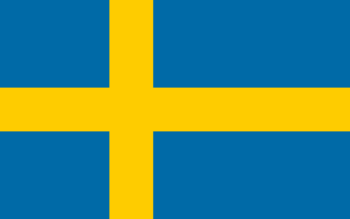
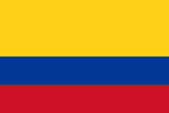

10 Países Mais Sustentáveis do Mundo em 2019
-
Islândia
Os islandeses têm se destacado no mundo na gestão ambiental. As iniciativas de desempenho de sustentabilidade do país são determinadas pelo Ministério do Ambiente e Agência Ambiental da Islândia. O índice de doenças decorrentes da poluição do ar, é quase zero. Por isso, a pegada de carbono está controlada. A política local é rígida com relação às mudanças climáticas, florestas prístinas e gestão das reservas de madeira. Não é a toa que a Islândia ocupa o topo desta lista. A sua pontuação no EPI é 93,5.
-

Suíça
As políticas ambientais da Suíça, lhes permitiram criar alternativas de sustentabilidade de alto impacto. Uma de suas inovações são as chamadas “Usinas Geotérmicas”, fontes de energia pouco poluentes que se utilizam do calor vindo do interior do subterrâneo para suprir o frio constante. A agricultura, por exemplo, depende da neve derretida vinda das geleiras que vira água pura. O governo suíço criou programas para controle do consumo da madeira de suas florestas. O Escritório Federal Suíço do Meio Ambiente, é o órgão governamental que fiscaliza toda essa questão ambiental no país. Graças ao seu rigor, o suíços ocupam a segunda posição no EPI e sua pontuação está em 89.1.
-

Costa Rica
Esse belo país da América Central, é famoso por causa das rainforests, dentre outras belezas naturais. Com sua densa floresta tropical e belas praias, a Costa Rica se tornou um dos países mais sustentáveis do mundo. Essa sustentabilidade é garantida pelo Ministério do Ambiente e Energia. Graças à dedicação em preservar a silvicultura, o país está nas cabeças no ranking do EPI, com a pontuação de 86,4.
-

Suécia
Quando se trata de gestão hídrica, saúde ambiental e gestão florestal, o país escandinavo se destaca, permanecendo na galeria do top 10 da sustentabilidade! Você sabia que o primeiro shopping de produtos recicláveis do mundo fica na Suécia? O ReTuna Recycling Galleria tem 14 lojas, um restaurante orgânico e espaços para conferência e debates sobre o futuro do meio ambiente. Além desse local, a Suécia é um dos pioneiros do Movimento Slow, o que alhe vale destaca no ranking, com a pontuação no EPI, de 86,0.
-
Noruega
A Noruega é outro país escandinavo conhecido por suas belezas naturais e sua responsabilidade ecológica. Suas políticas ambientais são rígidas e penalizações severas são impostas a quem transgride. Tudo é controlado pelo importante órgão do governo, a Agência do Clima e da Poluição, sob a tutela do Ministério Norueguês do Meio Ambiente. Bem rankeada, a Noruega está no quinto lugar, com 81,1 pontos no gráfico do EPI.
-

Ilhas Maurício
Essas belas ilhas, que se situam próximas à costa de Madagascar, têm se destacado pela sua eficiente gestão ambiental, especialmente na agricultura, silvicultura e na pesca. O Ministério do Meio Ambiente e Desenvolvimento Sustentável, é o responsável pelas medidas ecológicas de grande impacto nas ilhas. Inclui-se a obrigatória dieta equilibrada no cardápio da população, fator super-importante no ranqueamento. No EPI, as Ilhas Maurícios estão pontuadas com 80,6 pontos no EPI.
-

França
Tenho certeza de que você já usou perfume francês ou bebeu aqueles deliciosos vinhos franceses. Mas, certamente, não sabe que a França é um dos pioneiros da sustentabilidade no mundo! Um dos exemplos, é a mobilidade. Existe grande incentivo governamental ao uso de bicicleta sustentável. O país é famoso pelo seu tradicional bonde elétrico, que substituiu frotas de ônibus no fim da década de 90, nas cidades como Bordeaux e Lille. A alimentação é outro fator que pesou na classificação francesa. Os cardápios são, rigorosamente, orgânicos e balanceados, pois a legislação é rigorosa com relação às suas políticas ambientais e alimentares. No EPI, o país pontuou 78,2.
-
Áustria
A Áustria, país de grandes compositores eruditos, é outro país que se sobressai na lista dos países mais sustentáveis do mundo. Apesar de ser um país pequeno e ter uma floresta cobrindo um espaço de 46% do seu território, o país consegue manter sua agenda sustentável em dia e em vários setores. Cortada pelos rios Danúbio e Inn, a Áustria se destaca pela conservação de suas reservas ambientais nesses locais. Sua Agência Federal do Ambiente mantém intactos todos os recursos naturais de florestas e de parques.
-
Cuba
Apesar de seu governo autoritário, Cuba tem se destacado entre os países mais sustentáveis do planeta. Essa qualidade acontece desde a aprovação da “Lei 33”, trazendo exigências ecológicas, até hoje respeitadas. Podem falar o que quiser de Cuba, menos que o país não protege sua natureza!
-

Colômbia
Ao lado do Brasil, os colombianos são famosos por produzir o melhor café do mundo. Essa produção é famosa pelos seus métodos de sustentabilidade que superam o Brasil. A Colômbia possui florestas com a maior biodiversidade natural da Terra. Só perde para a Amazônia. Preservar o parque florestal colombiano é missão sagrada do Ministério do Meio Ambiente, Habitação e Desenvolvimento Territorial do país. Por isso, esse esforço coloca a Colômbia no top 10 do mundo sustentável!